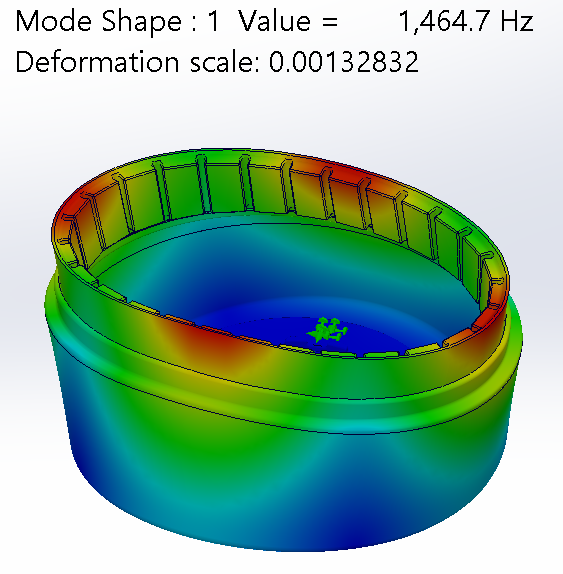
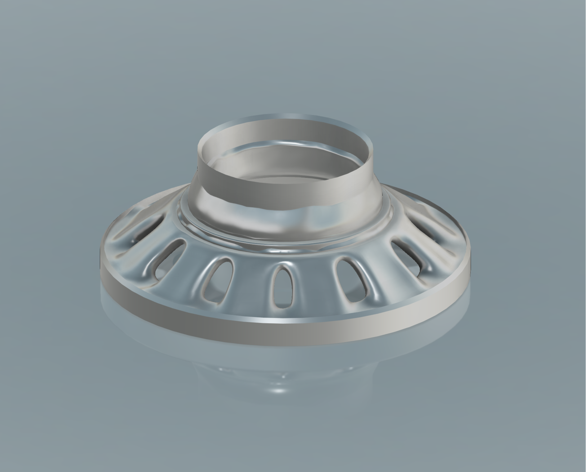
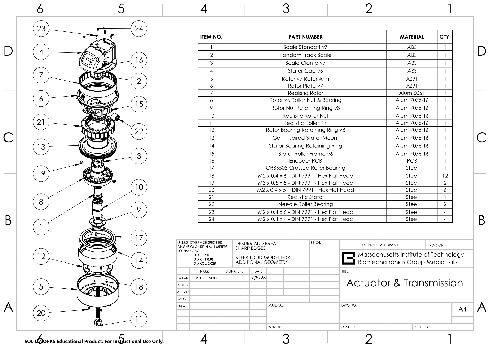

Biomech Actuator
High Torque Density Motor Design

Analysis & Optimization
Conducted full rotor resonance analysis to identify critical speeds and ensure stability across the entire operating range of the motor.

Generative Design
Utilized generative design principles to lightweight the stator while maintaining structural integrity and heat dissipation capabilities.
